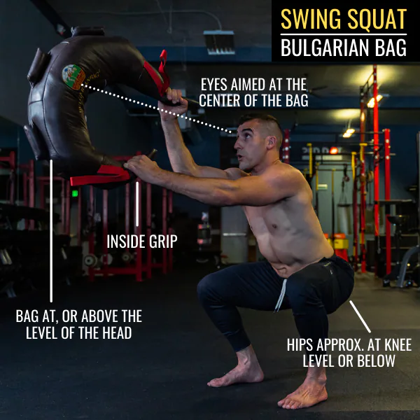

B308 · Leg Training with the Bulgarian Bag (infographic)
Hi {first_name}, ⠀ While there's countless movements that you can do with the Bulgarian Bag, this one in particular, the Swing Squat, is among the most effective for training legs.⠀ ⠀ What you'll experience when done correctly is a deep conditioning of the legs (primarily the quads, hamstrings, and glutes) and back, as well as improved coordination. ⠀ Where I see most people experiencing challenge with this movement is on coordinating the lower and upper body.⠀ ⠀ Many times when first learning, people will perform it like a classic swing (just as you would a kettlebell), however, for a proper swing squat, that would be incorrect. With this movement, the goal is when the Bulgarian Bag raises, the hips drop, and visa-versa. ⠀
Here is a graphic to illustrate the bottom position of the Swing Squat and where the Bulgarian Bag should ideally finish.  If you would like to see a video of this movement, I recently posted a demonstration in slow-motion on Instagram, which you can watch here, along with four other movements you'll enjoy. The Swing Squat shows up regularly in my Bags and Bells weekly classes, as well as is one of the feature movements in my first virtual workshop of the new year happening tomorrow, January 16th. If you'd like to learn the fundamentals of this incredible training tool, tomorrow I am hosting a virtual workshop. If you own a Bulgarian Bag, or would like try this training in the future, I highly suggest taking advantage of this opportunity to deepen your understanding and ensure you are getting the most out of your training. It will be 90 minutes long and packed with some great gems. Click here for this workshop as well as to see the other killer ones I've got planned.
P.S. Now, anyone who gets my Bags and Bells Elite weekly class, will get my new monthly workshops for FREE as a bonus! That's nearly $1200 in amazing education delivered by top presenters in health and performance as my gift to you for free! If you'd like to get access to tomorrow's workshop and weekly live classes with me, please click here. |